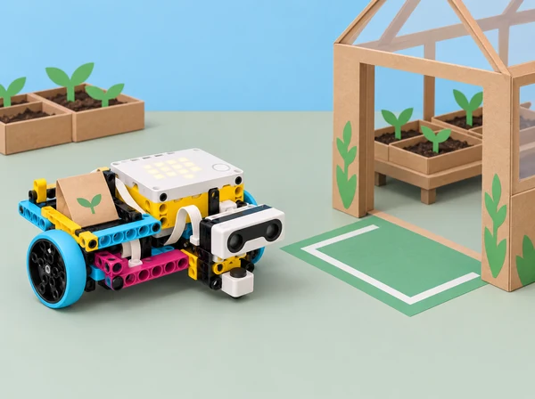

Una parada a temps
🏷️ Python: sensors i decisions
🌱 Situació, repte i intenció
L’equip ha de decidir quines entrades pot llegir, quines condicions les interpreten i com evitar que una lectura incerta es convertisca en una acció no desitjada.
Aquesta situació adapta les sis lliçons de la unitat 3 Sensor Control de LEGO Education Introduction to Python Programming · Course 1: Start Sensing, Charging Rhino, Cart Control, Safe Delivery, Grasshopper Troubles i Ideas to Help Your Grasshopper. Conserva el treball amb sensor de força i condicionals, relació entre potència i moviment, sensor de distància/ultrasons, ús segur dels sensors en un model mòbil, depuració d’un prototip i feedback de millora. El context de viver i les dades són simulats;
no es presenta el robot com a transportador autònom ni com a sistema de seguretat.
🎯 Aprenentatges i vocabulari
- Interpretar el sensor de força com una entrada que pot detectar una pressió, alliberament o colp segons la funció disponible; diferenciar l’acció humana de la lectura del programa.
- Usar condicionals per decidir si el prototip espera, comença, continua o s’atura; descriure les condicions en pseudocodi abans de programar-les.
- Relacionar potència dels motors amb distància, temps, estabilitat i energia del moviment, sense suposar una relació fixa independent del muntatge.
- Descriure el sensor de distància com una mesura basada en ultrasons, reconéixer unitat, rang i factors que poden alterar la lectura.
- Programar la resposta del vehicle amb llindar de distància i aturada; explicar que el llindar s’ha d’ajustar a la geometria i la velocitat de la base.
- Fer una entrega segura simulada: càrrega lleugera, ruta plana, zona d’arribada ampla i supervisió manual durant tota la prova.
- Depurar separadament sensor, condició, potència, muntatge i lògica; provar una causa cada vegada i mantindre un registre.
- Donar i rebre feedback amb evidència observable, seleccionar un suggeriment i repetir un cas de prova abans/després.
Entrada: dada rebuda pel programa, com ara la pressió del sensor. Condicional: instrucció que tria una acció segons si una expressió és vertadera o falsa. Llindar: valor a partir del qual s’activa una regla. Ultrasons: so d’alta freqüència usat pel sensor per estimar separació respecte d’un objecte. Potència: intensitat ordenada al motor, que no determina per si sola la velocitat real. Fals positiu/negatiu: activació o absència d’activació que no concorda amb el criteri de prova.
# Pseudocodi conceptual, no és una API executable de SPIKE
si s'ha confirmat_l'ordre:
avançar_a_velocitat_baixa()
si distancia_llegida < llindar_d'aturada:
aturar_i_mostrar_arribada()Les crides reals del sensor, lectura no disponible, ports i motors varien segons la versió de l’app SPIKE. Consulteu la Knowledge Base instal·lada i eviteu assumir que una lectura absent equival a zero: definiu què fa el robot davant d’una lectura invàlida i com pot aturar-lo manualment una persona.
🧰 Materials i preparació
Un set LEGO Education SPIKE Prime 45678 per equip, hub carregat, base de dos motors o plataforma estable, sensor de força, sensor de distància, peces per a un suport senzill de càrrega, paquet gran i lleuger de cartó/paper, cartó per a barrera i topalls tous, cinta de paper, regla o cinta mètrica, diari d’enginyeria i dispositiu amb l’app SPIKE que permeta Python i consola. Eviteu càrregues amb llavors reals, terra, aigua o elements menuts;
no necessitem el sensor de color en aquest repte.
Prepareu un carril pla de menys d’un metre, amb marge lateral, punt d’inici marcat, una barrera gran i mat, i zona de parada lluny de la vora. Col·loqueu el sensor de distància frontalment i sense obstruccions pròximes al camp de lectura; proveu cartó perpendicular i en angle per mostrar variació. Fixeu un llindar inicial conservador, executeu sense càrrega primer i a velocitat baixa. Comproveu la parada del programa, el cablejat i els ports abans d’afegir moviment.
Si no hi ha Python o sensor disponible, l’alumnat pot fer les mateixes taules amb lectures preparades, però identifiqueu-ho com a simulació.
Rols rotatius: Python/condicions, construcció/seguretat, mesura/registre i observació de feedback. Cada prova ha d’indicar el punt d’inici, càrrega, llindar, potència seleccionada, superfície i posició de l’obstacle; canvieu-ne només una per iteració.
📅 Seqüència didàctica
Un botó inicia una decisió (45 min)
Fase 1 · Activem i prediem
Fase 2 · Explorem i construïm
Predicció de sensor (8 min): observeu el sensor de força i formuleu què podria distingir: premut, soltat, colpejat. Diferencieu allò que heu observat d’allò que suposàveu.
Fase 3 · Expliquem i registrem
Python (18 min): connecteu el sensor al port confirmat, obriu un exemple oficial de la Knowledge Base i llegiu-ne cada línia. En un primer programa imprimiu l’estat si la funció ho permet; en un segon, afegiu una condició perquè una pressió curta active una llum de confirmació o permeta iniciar una acció motoritzada breu. No useu motor fins que la lògica d’entrada funcione amb actuadors quiets.
Fase 4 · Apliquem i millorem
Fase 5 · Comprovem i reflexionem
La potència canvia el viatge (45 min)
Fase 1 · Activem i prediem
*Repte inspirat en Charging Rhino (5 min):* imagineu una base que necessita “carregar-se” abans de portar el paquet; relacioneu força/pressió amb una ordre explícita, no amb energia elèctrica real ni amb cap animal automatitzat.
Fase 2 · Explorem i construïm
Prova mecànica (10 min): sense obstacle, mesureu el recorregut amb una potència baixa i temps fix. Feu tres repeticions i registreu distància, dispersió i irregularitats.
Fase 3 · Expliquem i registrem
Comparació controlada (18 min): repetiu amb un segon valor de potència, mantenint temps, càrrega, superfície i punt d’inici; establiu una parada manual i un límit segur. Compareu distància i temps, i expliqueu per què la potència ordenada no és una velocitat física calibrada.
Fase 4 · Apliquem i millorem
Fase 5 · Comprovem i reflexionem
Conclusió (4 min): anoteu quina configuració sembla controlable dins d’aquesta pista, no quina seria “millor” universalment.
El sensor de distància orienta una parada (45 min)
Fase 1 · Activem i prediem
Investigar (7 min): compareu com una persona pot estimar si hi ha espai davant d’un vehicle i què necessita fer un robot si l’obstacle és més pròxim del que esperava.
Fase 2 · Explorem i construïm
Lectures sense moviment (12 min): connecteu el sensor de distància; poseu una barrera de cartó a tres posicions mesurades amb regla i registreu la lectura retornada, unitat i diferència. Repetiu una posició amb el cartó perpendicular i lleugerament inclinat. No toqueu ni tapeu el sensor durant la lectura.
Fase 3 · Expliquem i registrem
Fase 4 · Apliquem i millorem
Casos límit (7 min): proveu obstacle llunyà, pròxim, superfície obliqua, absència d’objecte en rang i lectura invàlida simulada. Definiu parada segura explícita.
Fase 5 · Comprovem i reflexionem
Entrega segura per una ruta curta (45–90 min)
Fase 1 · Activem i prediem
Especificació (10 min): el prototip parteix d’una línia, espera pressió de la persona operadora, avança amb un paquet lleuger, llig una barrera i s’atura abans de tocar-la; la persona confirma l’arribada. Fixeu criteris: queda dins del carril, porta la càrrega sense desplaçar-la, no xoca i té parada manual.
Fase 2 · Explorem i construïm
Pseudocodi i taula (10 min): detalleu estats, lectures, llindar i eixides abans de programar. Separeu “no hi ha lectura” de “no hi ha obstacle”.
Fase 3 · Expliquem i registrem
Fase 4 · Apliquem i millorem
Fase 5 · Comprovem i reflexionem
Extensió (fins a 90 min): dissenyeu una maqueta de viver amb dues parades àmplies i ajusteu el flux amb una targeta de “confirmar”, sense afirmar que el robot evita qualsevol persona o obstàcle real.
Depurar el salt del llagostí (Grasshopper Troubles) (45 min)
Fase 1 · Activem i prediem
Observació (5 min): reviseu el model d’entrega i el cicle de prova. El títol oficial introdueix problemes del prototip “grasshopper”; ací el transformem en una base que fa un avanç curt erràtic o atura fora de la zona.
Fase 2 · Explorem i construïm
Classificació de possibles causes (10 min): agrupeu pistes en maquinari/port, orientació i lectura del sensor, llindar/condició, potència/temps i geometria/rodes. No canvieu totes les categories de cop.
Fase 3 · Expliquem i registrem
Estacions de diagnòstic (18 min): investigueu tres símptomes: sensor en port diferent, barrera mal orientada i llindar massa estricte. Els errors de connexió s’inspeccionen amb motors aturats. Per cada cas, formuleu hipòtesi, proveu la lectura a mà o amb consola i canvieu només una causa.
Fase 4 · Apliquem i millorem
Retest (8 min): repetiu el mateix inici i obstacle tres voltes; anoteu si l’error es manté.
Fase 5 · Comprovem i reflexionem
Idees per millorar el prototip (Ideas to Help Your Grasshopper) (30–45 min)
Fase 1 · Activem i prediem
Preparar una revisió (7 min): mostreu especificació, pseudocodi, configuració del llindar i dades d’almenys tres proves, inclosa una fallida.
Fase 2 · Explorem i construïm
Fase 3 · Expliquem i registrem
Fase 4 · Apliquem i millorem
Fase 5 · Comprovem i reflexionem
Compartir (3–8 min): comuniqueu canvi, resultat i límit pendent. L’objectiu és usar perspectives externes per refinar disseny, no que tots els prototips siguen idèntics.
🧪 Evidències i avaluació
El dossier inclou mapa de ports, diagrama d’estats, pseudocodi, valors de sensor amb unitats, comprovació de llindar, taula potència/temps/distància, codi Python comentat, casos vàlids i invàlids, registre d’aturada i desviació, depuració d’una causa, feedback, canvi i retest. El producte és un prototip de taula amb una ruta de lliurament de llavors simulada, una targeta d’operació i una explicació de les condicions en què s’ha provat.
Avalueu:
♿ Participació, accessibilitat i seguretat
Oferiu lectura de dades en taula impresa, simulació d’entrades en paper, pseudocodi dictat o compartit, pantalla ampliada i rols equivalents de prova, disseny i registre. Utilitzeu targetes amb paraula, símbol i forma, no només color. La pressió s’aplica suaument i el sensor no es colpeja. Moviments sempre curts, lents, sobre superfície plana i amb supervisió; mans lluny de rodes, eixos i mecanismes. No es fan proves amb animals, plantes vives, persones com a obstacles, escales ni passadissos oberts.
No es capturen imatges ni dades personals. La maqueta no és un dispositiu certificat d’evitació ni es pot deixar funcionant sense supervisió.
🔗 Referents i adaptació
Adapta les sis lliçons de la unitat 3 Sensor Control del curs LEGO Education *Introduction to Python Programming · Course 1*: Start Sensing, Charging Rhino, Cart Control, Safe Delivery, Grasshopper Troubles i Ideas to Help Your Grasshopper. La guia oficial especifica force sensor i condicionals per a Start Sensing; sensor de distància, moviment i ultrasons per a Cart Control; investigació de potència i moviment per a Charging Rhino i Safe Delivery; i depuració/feedback per a les dues darreres lliçons.
El context de viver, el guió, instruments d’avaluació i imatge són originals. Les API i la resposta a lectures absents depenen de la versió local de SPIKE i s’han de validar abans de classe; no es copien les construccions ni pàgines d’alumnat LEGO.